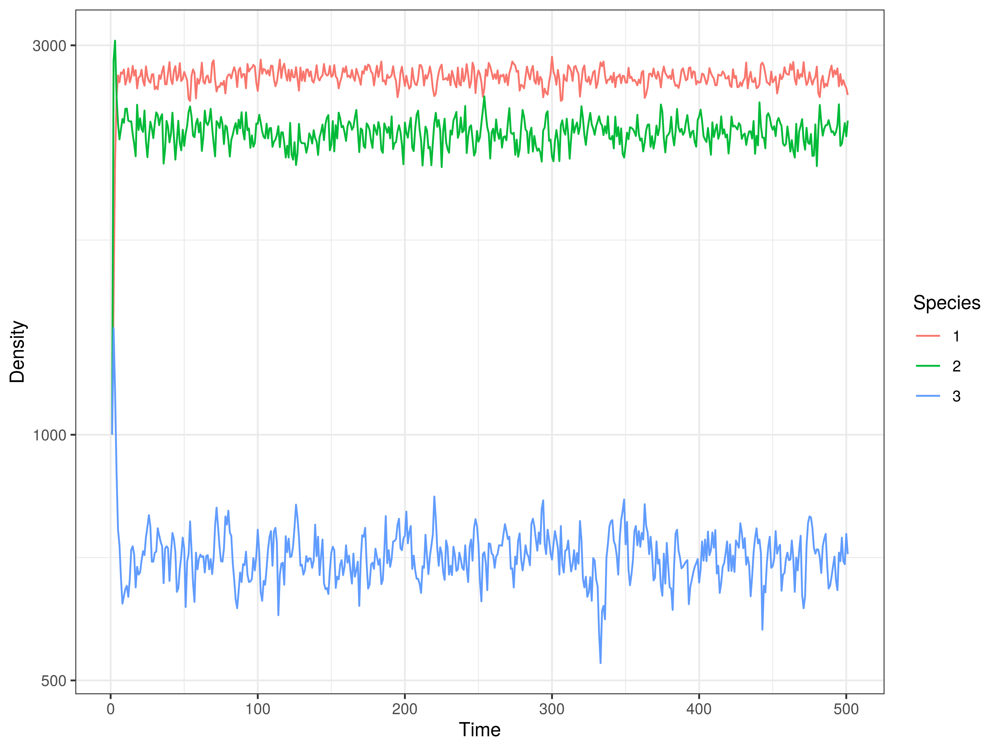

Stochastic Network Interaction Model (SNIM) Tutorial
This is a beautifully simple ecological network model that can simulate predator-prey and competitive multispecies dynamics. This is the B model of the paper 1, I read it long ago and for many years I wanted to make a version of it, finally, I did it.
You can find the source code here https://github.com/lsaravia/snim, to install it you need to clone it using git clone or download and compile it, following the instructions in the README will be enough.
Then the description of the model from 1 is the following
The second model again involves a set of S (possible) species plus empty sites (pseudospecies labelled 0). This set (the species pool) $\Omega(S)$ is then a discrete set:
$\Omega(S) = {0,1,2,…,S}$
where 0 indicates empty space, available to all species from the pool. Three basic types of transition are allowed to occur. Let us call $ A,B \in \Omega(S )$ two given spcies present at a given step. These possible transitions are summarized as follows.
(i) Immigration: an empty site is occupied by a species randomly chosen from the set of (non-empty) species, i.e. $A \in \Omega(S )-{0}$:
$0 \xrightarrow{u_i} A$
This occurs with a probability of colonization (of empty sites) $\mu_i$ . Notice that this colonization depends on the particular species.
(ii) Death: All occupied sites can become empty with some fixed probability $e_i$ :
$A \xrightarrow{e_i} 0$
(iii) Interaction: the same rule as in model A is used, but here the probability of success $P_{ij}$ is weighted by the coefficients of the interaction matrix. Here we use
$P_{ij} = \pi[\Omega_{ij} - \Omega_{ji}]$
where $\pi[x]=x$ when $x > 0$ and zero otherwise. This probability of an interaction occurring in the system between species $i$ and $j$ is a measure of the interaction strength linking interacting species.
So I’ll demonstrate how to use it from R
Then the fun part is to make simulations, for that we need the parameters: there is an species parameter file and a simulation parameter file.
The structure of the species parameter file is in the following example:
# Model parameters example
#
3 10000 # 3 species, total habitat 10000
0.1 0.1 0.1 # Immigration vector
1 1 1 # Extinction vector
# Omega interaction matriz
# Species 0 is empty space
# Species 1 Predator eats 2 and 3
# Species 2 has higher growth rate
# Species 3 outcompete species 2
0.0 0.0 0.0 0.0
0.0 0.0 3.0 2.0
4.0 0.0 0.0 0.0
2.0 0.0 0.5 0.0
The lines that start with ‘#’ are comments, then the first 3 lines define the general parameters.
The first row define a total amount of habitat in our simulation, then the number of species.
Species can migrate from the outside, this asumes that the habitat is sorrounded by a regional or bigger community that is the source of individuals. Then the 2nd. row is the immigration rate vector. Species can go locally extinct or death, we assume that they don’t live forever. And finally the ‘omega’ or interaction matrix, the first column are the intrinsic growth rate of species, and the first row is a special species: the empty space.
Then we need the simulation parameters, this is a simple example
# Simulation parameters example
#
rndSeed = 0 # 0 means a random rndSeed
nEvals = 500 # number of time steps
tau = 0.01 # Integration step
iniCond = 1000 # Initial condition of abundance of species
# if only one number is specified all the species will have the same initial conditions
So to run from ‘RStats’ there is a set of functions included, and we need to set a global variable with the binary of the model. If we call simul.cfg to the simulation file, and model3.par to the parameters file the following code will run the model
# Global path to the binary of SNIM model
#
snimBin <- "~/Dropbox/cpp/CaNew/snim/dist/Release/GNU-Linux/snim"
source("R/snim_functions.r")
out <- run_snim_plot("simul.cfg","model3.par","model.out")
{kind=link}

Have fun!
-
Sole, R. V, Alonso, D. & Mckane, A. (2002). Self-organized instability in complex ecosystems. Philos. Trans. R. Soc. Lond. B. Biol. Sci., 357, 667–681 https://royalsocietypublishing.org/doi/10.1098/rstb.2001.0992. ↩︎
Leonardo A. Saravia
Professor/Researcher
Docente/Investigador de la @ungsoficial, Doctor en Biología de la UBA. Complex systems. Networks. Global Forest Fragmentation. Open science. R C++ & Python.